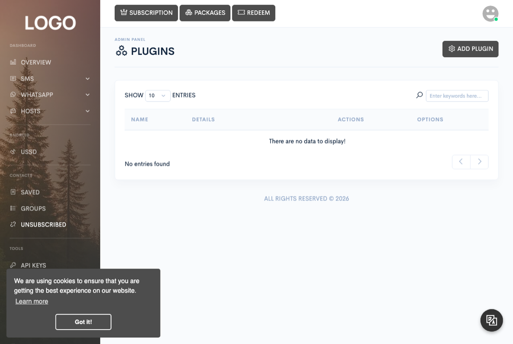

Administration
Plugins
Install, configure, and remove plugins — including the PayPal and Mollie payment gateways shipped with this release. This page is the complete installation guide for both; there's nothing else to read online to get them working.

What a plugin is
A plugin is a self-contained package that Zender registers once installed. Every plugin needs exactly two files at the top of its folder:
- A manifest with the plugin's name, and optionally: a section declaring the configurable fields it exposes (API keys, toggles, and so on — these become the plugin's settings form in the dashboard), install/uninstall actions to call automatically, a list of custom buttons to show on its row in Admin → Plugins, and any extra model files it needs loaded before it runs.
- An entry point that maps action names to the code that handles them — every request the plugin handles is routed through this mapping.
A plugin with nothing configurable in its manifest has nothing to configure — its gear (settings) icon in the plugins list is disabled.
Installing a plugin
From Admin → Plugins, click Add plugin and
upload the plugin's .zip file. Zender extracts it, expects its first
entry to be a single top-level directory, copies that directory's contents into
place, confirms its manifest is present, runs the manifest's install action if one
is declared, and finally registers the plugin.
The bundled payment gateways
Only the built-in offline/bank-transfer payment method is active out of the box — it's a core
feature gated by a site setting, not a plugin. Everything else, including card and wallet payment
providers, is installed as a plugin. Two payment gateway plugins ship in this release, in a top-level
Plugins/ folder in the release zip:
| File | Gateway |
|---|---|
Plugins/mollie-payment.zip | Mollie |
Plugins/paypal-payment.zip | PayPal |
Install only the gateway(s) you actually intend to use. After installing one, open its settings from the gear icon on its row in Admin → Plugins and fill in whatever credentials it asks for before expecting it to work for customers.
Setting up PayPal
Once the PayPal plugin is installed, its settings form asks for:
- USD conversion — converts the payment amount to USD on PayPal's payment page before charging. Turn this on if your site's currency isn't one PayPal supports directly; charging in an unsupported currency can cause the payment to fail outright.
- Sandbox mode — runs the gateway against PayPal's test environment instead of processing real transactions. Make sure this is off before you go live.
- Client ID and Secret key — your credentials from your PayPal developer account.
Setting up Mollie
Once the Mollie plugin is installed, its settings form asks for:
- USD conversion — the same idea as PayPal's: converts the payment amount to USD before charging, useful if your site's currency isn't one Mollie supports directly.
- API key — your key from your Mollie account.
Removing a plugin
The trash icon on a plugin's row in Admin → Plugins removes it. Zender deletes the plugin's registration first, then — while its files are still on disk — runs the manifest's uninstall action if one is declared, and finally deletes the plugin's entire folder. Because the registration is removed before the uninstall action runs, a failure in that step (network error, plugin bug) is silently logged and ignored — the plugin still gets fully removed either way, whether or not its own cleanup succeeded.